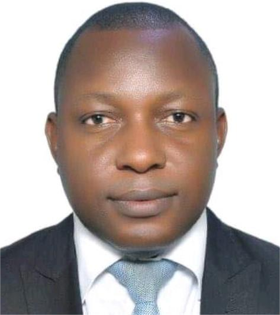
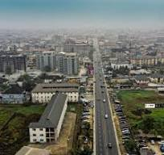

Williams Igoniye | WDD 130

Hello! My name is Williams Igoniye and I am from Port Harcourt, Rivers State, Nigeria. I enjoy exploring the field of medical physics and am currently enrolled in this web development course to enhance my skills in creating functional and aesthetically pleasing web pages.
Port Harcourt city of Nigeria

Port Harcourt, the capital of Rivers State in Nigeria, is a bustling metropolis known for its vibrant culture and significant economic contributions. Located in the oil-rich Niger Delta region, Port Harcourt is often referred to as the "Oil Capital of Nigeria" due to its pivotal role in the nation's oil and gas industry. The city boasts a diverse population and a lively cultural scene, with numerous festivals, markets, and entertainment venues. Port Harcourt is also home to several educational institutions and research centers, making it a hub for academic and professional growth. With its dynamic economy and rich cultural heritage, Port Harcourt stands as a vital and thriving city in Nigeria.